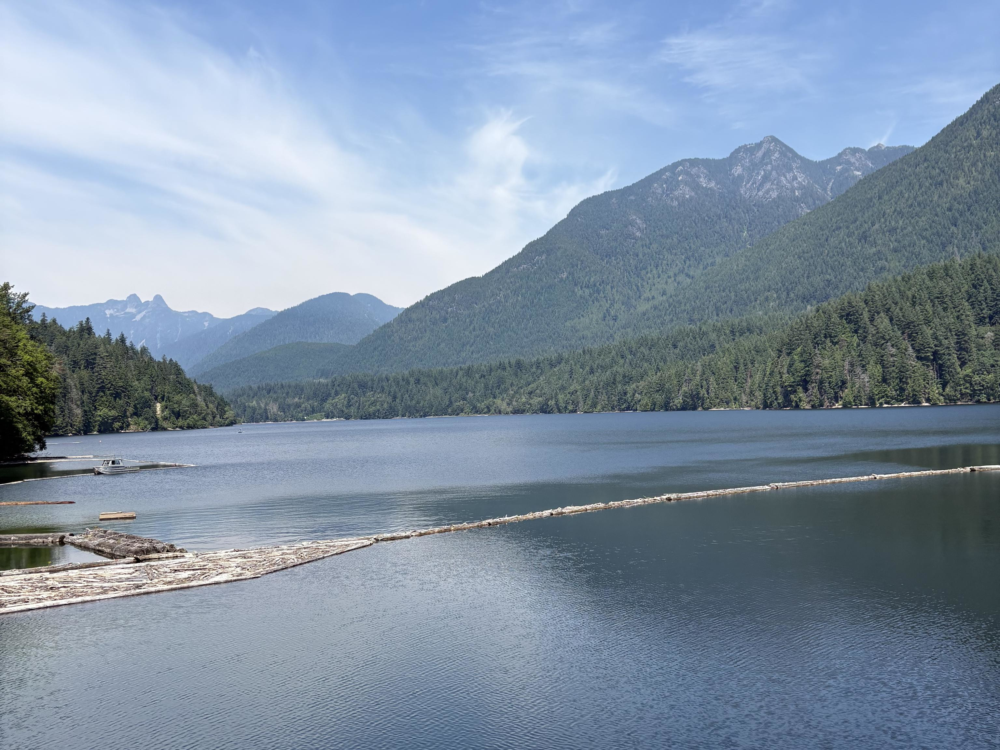

Stefan Boca
I'm a UC San Diego student majoring in Mathematics–Applied Science and minoring in Data Science. I maintain packages in Nixpkgs and Neovim plugins, and I’m interested in Linux, Rust (the programming language), and machine learning.
